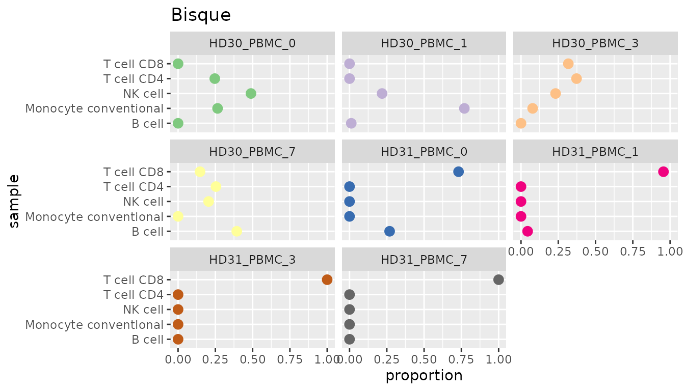

1. Introduction
Cell-type heterogeneity is a strong confounder as well as source of information in bulk RNA sequencing (RNA-seq) data. Computational methods for the deconvolution of bulk RNA-seq data can infer the cellular composition of heterogeneous samples by leveraging precomputed expression signatures that represent the transcriptional profiles of the cell types of interest. Second-generation deconvolution tools allow deriving cell-type-specific expression signatures from single-cell RNA-seq (scRNA-seq) enabling, in principle, the deconvolution of any cell type profiled with single-cell technologies.
Our interface unifies multiple second-generation deconvolution methods to facilitate the usage of these tools and clear the way for future benchmarking of these methods.
2. Deconvolution
In this section, we want to give an overview about the different methods and provide an example of how to use them.
Installation and Setup
Install the CRAN package devtools and use it to install immunedeconv2 from GitHub:
install.packages("devtools")
devtools::install_github("PelzKo/immunedeconv2")Input Data
First of all, you need some data to run the deconvolution with.
- Single cell RNA-seq data
- Genes x Cells matrix
- Counts are TPM normalized, not log-transformed
- Rownames (genenames) are provided in the same format as in the bulk RNA-seq data, for instance HGNC symbols
- Cell type annotations
- Vector containing cell type annotations
- Annotations are in the same order as the columns of the single cell matrix
- Bulk RNA-seq data
- Genes x Samples matrix
- Rownames (genenames) are provided in the same format as in the sc RNA-seq data, for instance HGNC symbols
We also provide some sample data, a bigger and a smaller set of single cell RNA-seq matrix (Maynard et al. 2020), cell type annotations and bulk RNA-seq matrix (Hoek et al. 2015). You can simply load it with:
For the small dataset, append "_small" to the names, e.g.
data("single_cell_data_small")Signature Matrix
To calculate a cell-type-specific expression signature, you can use the build_model function using the single cell RNA-seq matrix and cell type annotations specified above. The parameter method can be set to one of the four methods listed below. More information of the methods is provided in section 3.
immunedeconv2::build_model(single_cell_data, cell_type_annotations, method)- Bisque (“bisque”)
- DWLS (“dwls”)
- MOMF (“momf”)
- Scaden (“scaden”)
- CibersortX (“cibersortx”)
Note: MOMF and Scaden also need the bulk RNA-seq data to calculate a signature matrix. Please provide this parameter as well when running build_model with one of these two methods.
Additional parameters for the different methods can be included in the method call as well. For further information on which options you have, see the documentation of each tool.
Deconvolution of Bulk RNA-seq Data
After building the specific signature matrix, you can calculate the cell properties in bulk RNA-seq data with the deconvolute function. For this, you need to provide the bulk data, signature matrix and you can, again, choose between the four methods listed in the previous section.
immunedeconv2::deconvolute(bulk, signature_matrix, method)Note: Bisque and MOMF additionally need the single cell RNA-seq matrix, that you already used to build the signature matrix, for their deconvolution. As a fifth parameter, Bisque also needs cell type annotations, which were also already needed for building the model.
As for the build_model function, specific parameters can be passed on to the deconvolution methods.
Example Workflow
This workflow provides a more detailed example of how to run the deconvolution with Bisque.
First of all, make sure you load all the libraries we need for this analysis. If the packages are not available, install them via install_packages().
library(tidyr)
library(magrittr)
library(immunedeconv2)
library(RColorBrewer)
library(ggplot2)
library(data.table)To give you a feeling for the data, this is what the first few rows and columns of our small single cell RNA-seq dataset look like:
knitr::kable(single_cell_data[1:5, 1:4])| SRR10797331 | SRR10784783 | SRR10791871 | SRR10783889 | |
|---|---|---|---|---|
| TSPAN6 | 0 | 0 | 0 | 0 |
| FGR | 0 | 0 | 0 | 0 |
| CYP51A1 | 0 | 0 | 0 | 0 |
| AOC1 | 0 | 0 | 0 | 0 |
| WNT16 | 0 | 0 | 0 | 0 |
Now we build the signature matrix with Bisque and look at the values for the first few genes.
signatureMatrix <- immunedeconv2::build_model(single_cell_data, cell_type_annotations, "bisque")
knitr::kable(signatureMatrix[1:5,])| B cell | Macrophage | Monocyte conventional | Monocyte non-conventional | NK cell | T cell CD4 | T cell CD8 | T cell dividing | T cell regulatory | |
|---|---|---|---|---|---|---|---|---|---|
| TSPAN6 | 0.00000 | 0.0224404 | 0.00000 | 0.000000 | 0.00000 | 0.0000000 | 0.0000000 | 0.000000 | 0.0000 |
| FGR | 14.43455 | 30.7676144 | 313.40391 | 180.407874 | 77.97797 | 0.1278529 | 0.7800284 | 0.000000 | 0.0000 |
| CYP51A1 | 30.79303 | 10.9460034 | 13.19608 | 5.456035 | 22.90308 | 11.1332235 | 20.7037599 | 9.325876 | 20.4159 |
| AOC1 | 0.00000 | 0.0900427 | 0.00000 | 8.219547 | 0.00000 | 0.0000000 | 0.0000000 | 0.000000 | 0.0000 |
| WNT16 | 11.65795 | 0.0309828 | 0.00000 | 0.000000 | 0.00000 | 0.0000000 | 0.0000000 | 0.000000 | 0.0000 |
We can use this signature matrix to run the deconvolution with Bisque.
immunedeconv2::deconvolute(bulk, signatureMatrix, "bisque", single_cell_data, cell_type_annotations) %>%
knitr::kable()| B cell | Macrophage | Monocyte conventional | Monocyte non conventional | NK cell | T cell CD4 | T cell CD8 | T cell dividing | T cell regulatory | |
|---|---|---|---|---|---|---|---|---|---|
| HD30_PBMC_0 | 0.0000000 | 0.3538763 | 0.0000000 | 0.0000000 | 0.1740958 | 0.0000000 | 0.0506317 | 0.4213961 | 0.0000000 |
| HD30_PBMC_1 | 0.0000000 | 0.1136076 | 0.0000000 | 0.2588127 | 0.1689959 | 0.0000000 | 0.0000000 | 0.4585839 | 0.0000000 |
| HD30_PBMC_3 | 0.0000000 | 0.1483928 | 0.0000000 | 0.0000000 | 0.2431386 | 0.3459540 | 0.0000000 | 0.2625147 | 0.0000000 |
| HD30_PBMC_7 | 0.0000000 | 0.2308434 | 0.0000000 | 0.0000000 | 0.1853657 | 0.0000000 | 0.4179878 | 0.1658031 | 0.0000000 |
| HD31_PBMC_0 | 0.0000000 | 0.5108072 | 0.3647978 | 0.0000000 | 0.0000000 | 0.1243950 | 0.0000000 | 0.0000000 | 0.0000000 |
| HD31_PBMC_1 | 0.0000000 | 0.3681902 | 0.1929607 | 0.2083132 | 0.0000000 | 0.2305358 | 0.0000000 | 0.0000000 | 0.0000000 |
| HD31_PBMC_3 | 0.1603286 | 0.1429087 | 0.2630120 | 0.0000000 | 0.0000000 | 0.2268409 | 0.0000000 | 0.0000000 | 0.2069098 |
| HD31_PBMC_7 | 0.0000000 | 0.4834342 | 0.1360895 | 0.0000000 | 0.0000000 | 0.0711957 | 0.0000000 | 0.0000000 | 0.3092806 |
Plot Results
Here are some further ideas of how you could plot your deconvolution results.
res_bisque <- immunedeconv2::deconvolute(bulk, signatureMatrix, "bisque", single_cell_data, cell_type_annotations)
data.table(res_bisque, samples= rownames(res_bisque)) %>% pivot_longer(!samples, names_to ="cell_type", values_to="predicted_fraction") %>%
ggplot(aes(y=samples, x=predicted_fraction, fill=cell_type))+geom_bar(stat="identity", position = "stack")+labs(title="Bisque", y="sample", x="proportion", fill="cell type")+scale_fill_brewer(palette="Paired")
ggsave("images/bisque_prop.png", width = 7, height = 4)
data.table(res_bisque, samples= rownames(res_bisque)) %>% pivot_longer(!samples, names_to ="cell_type", values_to="predicted_fraction") %>%
ggplot(aes(y=samples, x=predicted_fraction, color=cell_type))+geom_point(size=3)+facet_wrap(~cell_type)+labs(title="Bisque", y="sample", x="predicted fraction", color="cell type")+scale_fill_brewer(palette="Paired") In the next figures you can see, how the other methods are used and how the cell proportions would be distributed based on their calculations. Here are some further ideas of how you could plot your deconvolution results.
res_momf <- immunedeconv2::build_model(single_cell_data, cell_type_annotations, "momf", bulk) %>%
immunedeconv2::deconvolute(bulk_gene_expression = bulk, method = "momf", single_cell_object = single_cell_data)
data.table(res_bisque, samples= rownames(res_bisque)) %>% pivot_longer(!samples, names_to ="cell_type", values_to="predicted_fraction") %>%
ggplot(aes(y=samples, x=predicted_fraction, fill=cell_type))+geom_bar(stat="identity", position = "stack")+labs(title="MOMF", y="sample", x="proportion", fill="cell type")+scale_fill_brewer(palette="Paired")
res_scaden <- immunedeconv2::build_model(single_cell_object = single_cell_data, cell_type_annotations = cell_type_annotations, method = "scaden", bulk) %>%
immunedeconv2::deconvolute(bulk_gene_expression = bulk, method = "scaden", single_cell_object = single_cell_data)
data.table(res_bisque, samples= rownames(res_bisque)) %>% pivot_longer(!samples, names_to ="cell_type", values_to="predicted_fraction") %>%
ggplot(aes(y=samples, x=predicted_fraction, fill=cell_type))+geom_bar(stat="identity", position = "stack")+labs(title="Scaden", y="sample", x="proportion", fill="cell type")+scale_fill_brewer(palette="Paired")
res_dwls <- immunedeconv2::build_model(single_cell_data, cell_type_annotations, "dwls") %>%
immunedeconv2::deconvolute(bulk_gene_expression = bulk, method = "dwls")
data.table(res_bisque, samples= rownames(res_bisque)) %>% pivot_longer(!samples, names_to ="cell_type", values_to="predicted_fraction") %>%
ggplot(aes(y=samples, x=predicted_fraction, fill=cell_type))+geom_bar(stat="identity", position = "stack") + labs(title="DWLS", y="sample", x="proportion", fill="cell type") + scale_fill_brewer(palette="Paired")
res_ciber <- immunedeconv2::build_model(single_cell_data, cell_type_annotations, "cibersortx") %>%
immunedeconv2::deconvolute(bulk_gene_expression = bulk, method = "cibersortx")
data.table(res_bisque, samples= rownames(res_bisque)) %>% pivot_longer(!samples, names_to ="cell_type", values_to="predicted_fraction") %>%
ggplot(aes(y=samples, x=predicted_fraction, fill=cell_type))+geom_bar(stat="identity", position = "stack") + labs(title="CibersortX", y="sample", x="proportion", fill="cell type") + scale_fill_brewer(palette="Paired")


3. Methods
In this section, we provide a short overview over the deconvolution tools that can be used via this package.
Bisque
Bisque(Jew et al., 2020) takes advantage of matched bulk and scRNA-seq samples to improve accuracy of cell-type estimates. Using linear regression, it corrects for platform-specific biases between pseudo-bulk reference profiles derived from scRNA-seq and bulk RNA-seq samples. It then applies NNLS-regression to deconvolute other bulk RNA-seq samples.
Citation: Jew, B., Alvarez, M., Rahmani, E., Miao, Z., Ko, A., Garske, K. M., Sul, J. H., Pietiläinen, K. H., Pajukanta, P., & Halperin, E. (2020). Publisher Correction: Accurate estimation of cell composition in bulk expression through robust integration of single-cell information. Nature Communications, 11(1), 2891. https://doi.org/10.1038/s41467-020-16607-9
DWLS
Tsoucas et al(Tsoucas et al., 2019) introduce dampened weighted least squares (DWLS)-regression, which improves over ordinary least squares regression or 𝜈-SVR in that it attributes higher weight to rare cell types and marker genes with a low average expression level. They show that their method achieves favorable performance when estimating the abundance of infrequent cell-types.
Citation: Tsoucas, D., Dong, R., Chen, H., Zhu, Q., Guo, G., & Yuan, G.-C. (2019). Accurate estimation of cell-type composition from gene expression data. Nature Communications, 10(1), 2975. https://doi.org/10.1038/s41467-019-10802-z
MOMF
With MOMF (Sun et al., 2019), Multi-Omics Matrix Factorization, models the cell type specific mean in sc RNA-seq data by also accounting for the uncertainty of these cell type specific mean gene expression levels. Alternating Direction Method of Multipliers algorithm is then used to estimate the parameters in bulk RNA-seq downstream analyses.
Citation: Xifang Sun, Shiquan Sun, and Sheng Yang. An efficient and flexible method for deconvoluting bulk RNAseq data with single-cell RNAseq data, 2019, DIO: 10.5281/zenodo.3373980
Scaden
Scaden(Menden et al., n.d.) leverages a deep neural network (DNN) for estimating cell-type proportions. Instead of explicitly building a signature matrix, the DNN implicitly learns which features are important for a certain cell type. The DNN is trained by simulating bulk RNA-seq samples with known cell-type proportions from scRNA-seq datasets. To increase robustness, the training process allows to flexibly integrate multiple scRNA-seq datasets and, optionally, bulk RNA-seq samples with “gold standard” measurements such as FACS.
Citation: Menden, K., Marouf, M., Oller, S., Dalmia, A., Kloiber, K., Heutink, P., & Bonn, S. (n.d.). Deep-learning-based cell composition analysis from tissue expression profiles. https://doi.org/10.1101/659227
Benchmarking
In the following section, we compare the deconvolution results of all methods with the ground truth, that was measured with FACS by Hoek et al. If the methods estimated the cell type fractions perfectly, we would expect the points to be on the diagonal line displayed in each facet. Note that the results are not fully representative as we only use a small subset of cells from the analysis of Hoek et al.